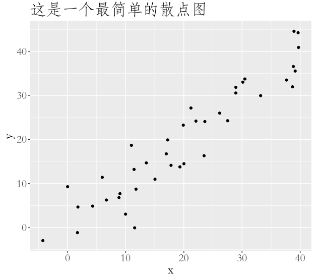
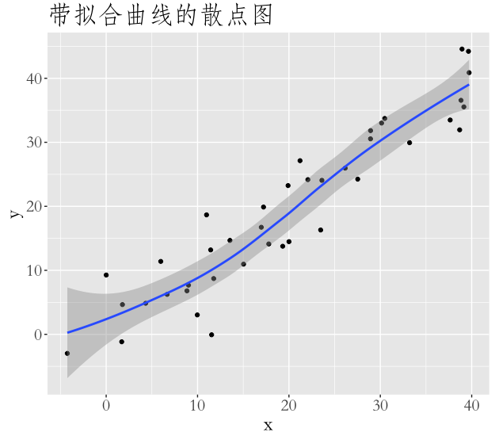
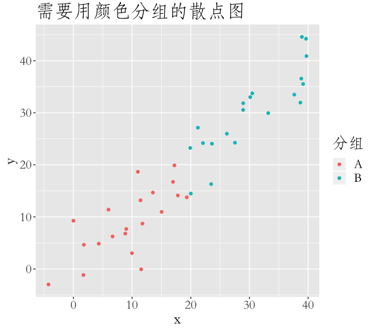

<!DOCTYPE html><html lang="cn"><head><meta charset="utf-8"><meta name="X-UA-Compatible" content="IE=edge"><meta name="viewport" content="width=device-width, initial-scale=1"><meta name="robots" content="index, follow"><title>ggplot系列之一：散点图 • 商业与数据</title><meta name="description" content="ggplot系列之一：散点图 - Yu Qin"><link rel="icon" href="/blog/favicon.svg"><link rel="stylesheet" href="https://unpkg.com/nanoreset@3.0.1/nanoreset.min.css"><link rel="stylesheet" href="/blog/css/theme.css"><link rel="search" type="application/opensearchdescription+xml" href="/blog/atom.xml" title="商业与数据"><meta name="generator" content="Hexo 4.2.0"><link rel="alternate" href="/blog/atom.xml" title="商业与数据" type="application/atom+xml">
<!-- hexo-inject:begin --><!-- hexo-inject:end --></head><body><div class="wrap" id="barba-wrapper"><header><h1 class="branding"><a href="/blog/" title="商业与数据">商业与数据</a></h1><ul class="nav nav-list"><li class="nav-list-item"><a class="nav-list-link no-barba" href="/blog/" target="_self">HOME</a></li><li class="nav-list-item"><a class="nav-list-link no-barba" href="/blog/archives" target="_self">ARCHIVES</a></li><li class="nav-list-item"><a class="nav-list-link no-barba" href="https://github.com/YuPototo" target="_blank">GITHUB</a></li></ul></header><div class="barba-container"><main class="container"><div class="post"><article class="post-block"><h1 class="post-title">ggplot系列之一：散点图</h1><div class="post-info"><a></a>2017-01-05</div><div class="post-content">

<!-- hexo-inject:begin --><!-- hexo-inject:end --><p>ggplot2 是 R 语言大神 Hadly Wickham 开发的数据可视化工具。Wickham 为数据可视化抽象出了一套“语法”，掌握这套语法后就可以系统性地生成可视化数据。</p>
<p>这个系列文章会介绍如何使用 ggplot2 做图。</p>
<p>本篇介绍最常见的散点图。</p>
<a id="more"></a>

<h2 id="准备数据"><a href="#准备数据" class="headerlink" title="准备数据"></a>准备数据</h2><p>每次我拿到数据的第一件事情，就是看看不同变量的散点图长啥样，看到散点图之后，就能对变量之间的关系做一定猜测了。</p>
<p>我们先准备一份用来画图的数据。</p>
<figure class="highlight r"><table><tbody><tr><td class="gutter"><pre><span class="line">1</span><br><span class="line">2</span><br><span class="line">3</span><br><span class="line">4</span><br><span class="line">5</span><br></pre></td><td class="code"><pre><span class="line">set.seed(<span class="number">955</span>)</span><br><span class="line">obs_num &lt;- <span class="number">40</span></span><br><span class="line">dat &lt;- data.frame(cond = rep(c(<span class="string">"A"</span>, <span class="string">"B"</span>), each = obs_num / <span class="number">2</span>),</span><br><span class="line">                  x = <span class="number">1</span>:obs_num + rnorm(obs_num, sd = <span class="number">3</span>),</span><br><span class="line">                  y = <span class="number">1</span>:obs_num + rnorm(obs_num, sd = <span class="number">3</span>))</span><br></pre></td></tr></tbody></table></figure>

<p>我们的模拟数据有3个变量，x 和 y 是数字，cond 是一个 categorical 变量。</p>
<h2 id="最简单的散点图"><a href="#最简单的散点图" class="headerlink" title="最简单的散点图"></a>最简单的散点图</h2><p>下面画一个最简单的散点图。</p>
<figure class="highlight r"><table><tbody><tr><td class="gutter"><pre><span class="line">1</span><br><span class="line">2</span><br><span class="line">3</span><br></pre></td><td class="code"><pre><span class="line">ggplot(dat, aes(x = x, y = y)) + </span><br><span class="line">  geom_point() + </span><br><span class="line">  labs(title = <span class="string">'这是一个最简单的散点图'</span>)</span><br></pre></td></tr></tbody></table></figure>

<p>结果如下图：<br></p>
<h2 id="添加拟合曲线"><a href="#添加拟合曲线" class="headerlink" title="添加拟合曲线"></a>添加拟合曲线</h2><p>有时我们想更清晰地看到数据趋势，ggplot 可以帮我们快速添加一条拟合曲线。</p>
<figure class="highlight r"><table><tbody><tr><td class="gutter"><pre><span class="line">1</span><br><span class="line">2</span><br><span class="line">3</span><br><span class="line">4</span><br></pre></td><td class="code"><pre><span class="line">ggplot(dat, aes(x = x, y = y)) + </span><br><span class="line">  geom_point() + </span><br><span class="line">  geom_smooth() +</span><br><span class="line">  labs(title = <span class="string">'带拟合曲线的散点图'</span>)</span><br></pre></td></tr></tbody></table></figure>

<p>结果如下图：</p>
<p></p>
<h2 id="给不同组的点上色"><a href="#给不同组的点上色" class="headerlink" title="给不同组的点上色"></a>给不同组的点上色</h2><p>如果数据中有不同的分组，我们会想在散点图中看到不同组的情况。</p>
<figure class="highlight r"><table><tbody><tr><td class="gutter"><pre><span class="line">1</span><br><span class="line">2</span><br><span class="line">3</span><br><span class="line">4</span><br></pre></td><td class="code"><pre><span class="line">ggplot(dat, aes(x = x, y = y, color = cond)) + </span><br><span class="line">  geom_point() + </span><br><span class="line">  labs(title = <span class="string">'需要用颜色分组的散点图'</span>,</span><br><span class="line">       color = <span class="string">'分组'</span>)</span><br></pre></td></tr></tbody></table></figure>

<p>结果如下图：</p>
<p></p>
<h2 id="使用-facets"><a href="#使用-facets" class="headerlink" title="使用 facets"></a>使用 facets</h2><p>如果组别太多，上色可能会让人眼花缭乱，这时我们可以使用 facets。</p>
<figure class="highlight r"><table><tbody><tr><td class="gutter"><pre><span class="line">1</span><br><span class="line">2</span><br><span class="line">3</span><br><span class="line">4</span><br></pre></td><td class="code"><pre><span class="line">ggplot(dat, aes(x = x, y = y)) + </span><br><span class="line">  geom_point() + </span><br><span class="line">  facet_wrap(~ cond) +</span><br><span class="line">  labs(title = <span class="string">'使用 facets 的散点图'</span>)</span><br></pre></td></tr></tbody></table></figure>

<p>结果如下图：</p>
<p></p>
<p>当然，我们也可以把颜色和 cond 结合起来，生成本文最开始那张图片。代码如下：</p>
<figure class="highlight r"><table><tbody><tr><td class="gutter"><pre><span class="line">1</span><br><span class="line">2</span><br><span class="line">3</span><br></pre></td><td class="code"><pre><span class="line">ggplot(dat, aes(x = x, y = y, color = cond)) + </span><br><span class="line">  geom_point() + </span><br><span class="line">  facet_wrap(~ cond)</span><br></pre></td></tr></tbody></table></figure>
<script>
        document.querySelectorAll('.github-emoji')
          .forEach(el => {
            if (!el.dataset.src) { return; }
            const img = document.createElement('img');
            img.style = 'display:none !important;';
            img.src = el.dataset.src;
            img.addEventListener('error', () => {
              img.remove();
              el.style.color = 'inherit';
              el.style.backgroundImage = 'none';
              el.style.background = 'none';
            });
            img.addEventListener('load', () => {
              img.remove();
            });
            document.body.appendChild(img);
          });
      </script></div></article></div></main><footer><div class="paginator"><a class="prev" href="/blog/2017/02/03/2017-02-03-ggplot-mosaic/">prev</a></div><div class="copyright"><p>&copy; 2020 <a href="http://yoursite.com">Yu Qin</a><br>Powered by <a href="https://hexo.io/" rel="noreferrer" target="_blank">Hexo</a></p></div></footer></div></div><script src="https://cdnjs.cloudflare.com/ajax/libs/barba.js/1.0.0/barba.min.js"></script><script>document.addEventListener('DOMContentLoaded', function() {
    Barba.Pjax.start()
})</script><!-- hexo-inject:begin --><!-- hexo-inject:end --></body></html>